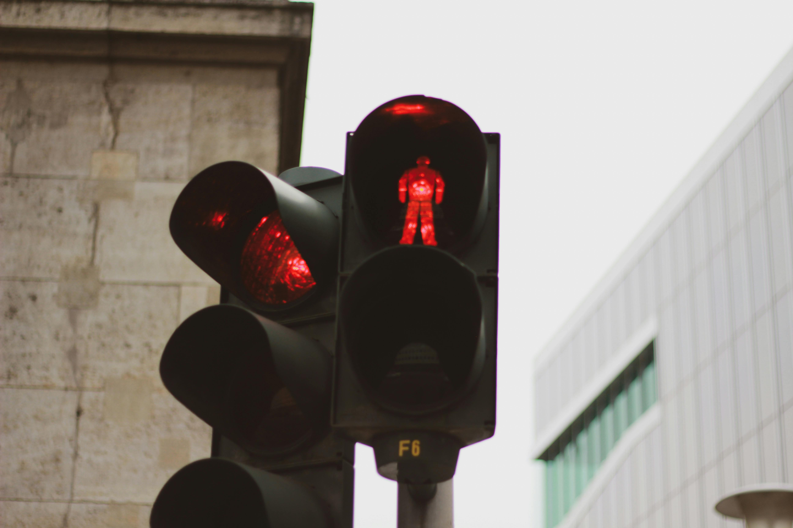

INVESTIGACIÓN
Los tipos de semáforos y su funcionamiento
- SEMÁFOROS PEATONALEs
Los semáforos reservados para peatones podemos encontrarlos con una luz roja no intermitente en forma de peatón inmóvil.
Indica que estos no deben comenzar a cruzar la calzada.Bajo la luz roja, nos encontramos una luz verde no intermitente en forma de peatón en marcha. Indica que pueden comenzar a atravesar la calzada. Si es intermitente significa que el tiempo para cruzar está a punto de finalizar y que, en breve, se encenderá la luz roja.
- Semaforos peatonales
SEMÁFOROS CIRCULARES PARA VEHÍCULOS
Son de diferentes tipos y cada luz significa algo diferente: Luz roja no intermitente: prohíbe el paso. Los vehículos no deben rebasar el semáforo ni, si existe, la línea de detención anterior al mismo. Si estuvieran dentro o al lado opuesto de una intersección, los vehículos no deben internarse en ésta ni, si existe, rebasar la línea de detención situada antes de ésta.
Luz roja intermitente o dos luces rojas intermitentes alternativamente: prohíben temporalmente el tránsito ante un paso a nivel, una entrada a un puente móvil o a un pontón transbordador, una salida de vehículos de extinción de incendios o una aproximación de una aeronave.
Luz amarilla no intermitente: indica que los vehículos deben detenerse en las mismas condiciones que si se tratara de una luz roja fija a no ser que, cuando se encienda, el vehículo se encuentre tan cerca del lugar de la detención que no pueda pararse con unas condiciones suficientes de seguridad.
Luz amarilla intermitente o dos luces amarillas intermitentes alternativamente: no prohíben el paso, pero exigen a los conductores extremar su precaución, ya que no eximen del cumplimiento de otras señales verticales que obliguen a detenerse o ceder el paso, o, en su ausencia, de obedecer las reglas generales sobre prioridad de paso.
Luz verde no intermitente: permite el paso con la excepción de que haya un atasco y podamos quedarnos bloqueados impidiendo el tránsito de los demás conductores o peatones que circulan de forma transversal.
Una flecha negra sobre una luz roja no intermitente o sobre una luz amarilla no cambia el significado de dichas luces, pero su acción se limita exclusivamente al movimiento indicado por la flecha.
La flecha negra sobre luz roja da el alto sólo a los vehículos que sigan la dirección de la flecha, no a los demás vehículos. La flecha negra sobre luz amarilla intermitente indica precaución para los vehículos que sigan sólo la dirección de la flecha.
Una flecha verde que se ilumina sobre un fondo circular negro significa que los vehículos pueden tomar la dirección y sentido indicados por ésta, cualquiera que sea la luz que esté simultáneamente encendida en el mismo semáforo o en otro contiguo
